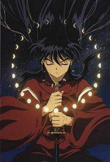

I'll start with noting that I'm afraid to go to the mailbox. There's a letter in there from Nicole, and I KNOW I haven't written her at all this year yet. I'm a shithead, do you know that? I'm too lazy to put the letter I've already written for her in the mailbox. This week, I'll do it!
There was a party last night. I've officially celebrated my winning the noise ordinance trial, but no one I wanted to celebrate it showed up. That's annoying, but no one can't say I'm not appreciative. I bought a whole case of beer! And despite reports to the contrary, I infact know alot about beer, but I know nothing about those interchangable main brands, they are all as boring as cranberry vodka. I'm convinced that a party without Everclear just isn't a party.
The party was very nice, only one bad spot involved an unknown very strange party-goer getting very drunk, puking and getting naked and obnoxious. I kept trying to help put the creep's pants back on, but I think he got some that were too small, he should run or bike or something. Anyways, in Missy/Nick party tradition, the cops came, but this time we called them out. He had to go to the hospital, and Matt abandoned me at the party all by my lonesome so he could be a sweet guy and make sure the guy was ok (recalling a night at Piedmont after I tried to swallow a fireball, hey, remember that?!)
So, barring pizza, the party kinda sucked when everyone was frightened away by the cops. I wanted to dance with Missy and stuff, but she had some blond beau in her sight, so I tried not to bother her. Everyone seemed to be getting along so nicely, late night coupling, you know the drill. I was coupled with the futon, and it was a great lay. Marilia took me home (she looked amazing last night) and we went to our rooms and went to sleep. I've felt strange all day. Except for when my mom told me I'd possibly be getting my new car in April, I haven't really wanted to talk to anyone or do anything. I'll just let this one come and go.
I talked to April last night (the redhead from Marietta). I need to find something for her birthday, which is the 16th. Wow, also term paper due date, scary. She's painting me a picture, I found a copy of it on the internet, it's from Inuyasha, I think it's pretty neat looking...

So, I should go out more, because I wish I was still at the party, it's so nice to be around people. I prefer it to sitting at home on Wednesday nights. I'll continue my search for a Boneshakers buddy...
I titled last week after the only My Bloody Valentine song I can stand. "I Let You Get To Me" for so many reasons, but the most intriguing of all of them is when you listen to the song, you don't actually understand what the moaning lead vocalist is actually saying.
Ok, I'm done. Spare me the boredom of waiting and talk to me, later instead of never.
Spent the majority of my free time yesterday sleeping. I had some very strange dreams. This whole week has just been packed with sublunar midnight memories, actually. In my second shift of sleeping on Sunday, I had a very memorable dream involving some very sexy making out, and then last night involving poolside hijinks and spa time with random fat old people (so fat they broke the spa). I believe I actually recalled being told that *someone* wouldn't stand idly by while I spent the Saturdays of my life fucking. Needless to say, Marilia was there in some disturbing sexual fashion. Would you say my subconcious is oversexed?
I should really do something productive today. I may opt out of Boneshakin' mostly because I'd like to watch Angel w/ Matt, especially the 100th episode he taped for me last week. Also, I really dig the waking up on Thursday morning with plenty of restful hours of bedlaying. I wish there was something really cool going on this weekend, you know, of the party variety. Only a whole lot of couples being all lovey-dovey, and having sex. Don't you just hate Valentine's Day?
I actually had to catch myself the other day. I almost scoffed at this year's arrangements, but then I had to catch myself: I'm in a relationship...I actually have a Valentine :-D This is a first, never in all my years of singledom could I ever hope to have an SO when good ol' Venus decided to eclipse the moon (or insert random other astronomically appropriate event). I don't know how I want to spend the day w/ Matt. Saturday is also the day Matt may legally drive again, as well as my Grandma's birthday. It would be nice to have a boyfriend with wheels. I mean, I know it's only been a little while since I was the boyfriend with wheels, but I'd really love to dole out some abuse, of the automotive variety ;-)
So maybe I'll con Missy into going to that dragshow with me on Friday. Assuming it's free or cheap, I haven't seen Sasha in FOREVER! She's probably already pissed off at me. If you get a chance, check out my Inuyasha away message. I was laughing hysterically when I put it up last night, for some reason, I was out of my mind. I had a rum and coke the other night, I think it's finally kicking in O:-)
"And I know I was wrong when I said it was true / That it couldn't be me and be her / Inbetween without you / Without you..."

Seriously though, I wish that meant something. The world won't turn on it's head tonight, nothing's going to change.
Maybe none of you noticed, but I think I had a nervous breakdown on Tuesday. I think "nervous" isn't the right word though. It would be the type of breakdown that occurs when you're completely alone and you just don't care about anything. I don't think, at any one point, all of those things occured to me, but I felt so incredibly apathetic about just about everything on Wednesday morning, I couldn't see beyond my own miserable circumstances, I just wanted to sit and discontinue. Just stop. I think because I didn't do anything on Tuesday, like I was supposed to, I felt that I needed to do more on Wednesday and Thursday as a result. I just didn't want to...so I didn't.
I don't feel like that now, I think I'm going to be ok. I'm going to be very studious on Sunday. I've decided that I will give myself Tuesday afternoons to do nothing. I think I'll be creative then and work on my ENGL4800 stuff then. I'm going to try and make Mondays and Thursdays my big days, also trying to have a better long term vision for the future. Maybe if I try not to take on the whole world at once, I'll be able to manage things better, one at a time.
I'm still feeling kind of dead. I wish I could have some grasp of what gave me this new sense of absense for me, but I will just have to wait and see if it goes away. Tonight I am probably going to Mary Kate's party and also Boneshakers probably. Tomorrow, I'm going to set up for the dance, but after that, I don't know. Something Valentine-ish w/ Matt, I'm sure. Sunday, Fink's term paper...and it's going to be good.
...I don't know what's wrong with people, it must not be them, it must be me. I'm sorry I'm such basket case.